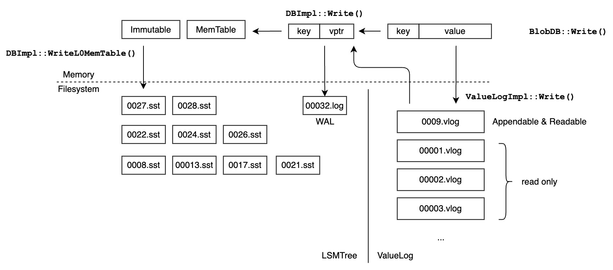

在LevelDB上实现KV分离
Table of Contents
1. 简介
实现基于LevelDB 1.23，修改和新增约6000行代码，其中包含1000行测试代码。
2. 实现细节
- BlobDB write
- BlobDB read
- ValueLog file
- ValueLog recovery
- Garbage collection
- Writer group
2.1. BlobDB write

接口：
Status BlobDB::Write(const WriteOptions& options, WriteBatch* updates, WriteCallback* callback);
以下，我们用 vptr 指代value pointer（ ValueHandle ）。
- 根据record的value size，将
WriteBatch* updates划分为WriteBatch small和ValueBatch large - 将
large写入ValueLog并获得相应的vptr - 将2中获得的
<key, vptr>s合并到small中。 - 将
small写入LSMTree
2.2. BlobDB read
接口：
Status BlobDB::Get(const ReadOptions& options, const Slice& key, std::string* value);
- 根据
key查询LSMTree - 如果1查到的是一个值（
kTypeValue），将value设置为它，返回。 - 如果1查到的是一个vptr（
kTypeValueHandle），用它查询ValueLog - 如果我们在3中读出了值，将
value设置为它，返回。 - 如果我们在3中得到了
kNotFound的错误，取得LSMTree当前的snapshot，并从1重试。
在此过程中，我们不加任何锁（除了LSMTree和ValueLog内部的锁）。可以证明，我们总是得到一致且正确的结果。在大多数情况下，我们将在2和4取得值并返回。进入步骤5并重试的情况很稀少，而且能保证重试最多一次。
正确性的简单分析和证明：
- 如果我们在第2步返回，安全。因为LSMTree内部是线程安全的。
- 如果我们在第2步取得的是vptr，
- 若GC是关闭的，BlobDB保证我们一定可以从ValueLog中读出正确的值。因为，即使别的线程在第2步和第3步之间调用Write更新了key对用的value，ValueLog是不会删除vptr所指向位置的旧值的。
- 若GC是开启的，vptr指向的旧文件有可能被删除（
options.snapshot =NULL= 时）。在这种情况下，步骤4将返回kNotFound错误。此时，我们在5中取得当前的snapshot并从1重试。ValueLog保证，旧文件不会被从磁盘上删除，直到旧文件中的所有record的sequence number比最旧的snapshot还要旧。（详细解释可以看Garbage collection部分）
2.3. ValueLog file
.vlog file:
---------- | record 0 | ---------- | record 1 | ---------- | record 2 | ---------- | record 3 | ---------- | record 4 | ---------- | record 5 | ---------- | . | | ... | | ..... | ---------- | record N | ----------
record:
---------------------------------------------- | KeySize | ValueSize | key | value | ---------------------------------------------- KeySize: VarInt32 ValueSize: VarInt32 key: uint8[KeySize] value: uint8[ValueSize]
在任何时间，ValueLog只有一个writable vlog和多个read-only vlog。
ValueLog将新record追加到writable vlog末尾。当writable vlog的大小超过限制，它将转变为read-only vlog。并且ValueLog会创建一个新的writable vlog。
2.4. ValueLog recovery
我们把ValueLog的持久化状态叫做persistent state。
ValueLog的persistent state用如下四个量描述：
- read-only .vlog files
- the latest writable .vlog file
- obsolete .vlog files
- next file number (每个.vlog和manifest文件都会被赋予唯一的file number)
和LevelDB使用增量的形式记录版本变化类似，ValueLog也使用增量的形式记录persistent state的变化，对应的类为 BlobVersionEdit ：
- newly added read-only .vlog files
- new writable .vlog file
- newly obsolete .vlog files
- next file number
- 每次ValueLog写满当前writable vlog并准备创建新的时，它会先创建一个
BlobVerdsionEdit，并在其中记录：（1）当前writable vlog要加入到read-only vlogs中，（2）要创建新的writable vlog，（3）next file number - 每次ValueLog结束GC时，它会创建一个 =BlobVersionEdit=， 并记录：（1）将新文件加入到read-only vlogs中，（2）将旧文件加入到obsolete files中，（3）next file number
BlobVersionEdit 会被先写入当前manifest file中，然后再应用所记录的变更。
将旧vlog加入到obsolete files并不会立刻从磁盘上删除它，详见Garbage collection部分。
在BlobDB启动时， ValueLogImpl::Recover 会读取manifest文件，不断应用这些变更，最终得到一个一致的persistent state。
2.4.1. Validate and reuse latest writable vlog
在recovery后，ValueLog会验证最新的writable vlog，并将它truncate到正确的大小。如果truncate后的大小较小，ValueLog会尝试先复用它，而不是创建新的。
2.5. Garbage collection
每隔 blob_gc_interval 秒，GC线程会选取一个read-only vlog进行垃圾回收。
GC可以分为两个阶段：collect和rewrite
2.5.1. Collect
在Collect阶段，GC线程会遍历所选取文件的所有records。
对每一个record，GC线程会查询LSMTree，以此判断该record是否需要丢弃：
- LSMTree返回NotFound错误
- LSMTree返回的是值而不是vptr
- LSMTree返回了vptr，但vptr不指向当前record
有效的（不需要丢弃）的record会被加入到buffer中。
2.5.2. Rewrite
如果被丢弃records的大小或数量的比例超过阈值，GC线程会将有效records写入新文件并丢弃旧文件。
rewrite流程：
- 创建一个新vlog，将有效records写入。
- 将新的vptr写入LSMTree
- 记录BlobVerdionEdit
有两点需要注意：
- 用户可能在collect和rewrite之间更新并覆盖一些记录
- 由于snapshot的存在，用户依然需要从旧文件中读取record
对于第一个问题：我们需要在将vptr最终写入LSMTree的WAL和MemTable前检查对应的key是否被覆盖。为了实现这个，我修改了LSMTree的写入以支持WriteCallback和WriterGroup（和RocksDB类似）。
对于第二个问题：用户可能持有旧的snapshot，从而读到旧的vptr。为了解决这个问题，我们在rewrite完成后只是将旧文件标记为废弃，而不删除。稍后，当 smallest_snapshot ，也就是最旧的snapshot的sequence number比旧文件中最新记录的sequence number还大时，我们就可以安全地从磁盘上删除旧文件。
2.6. Writer group
之前写过文章，见：给LevelDB添加WriteCallback